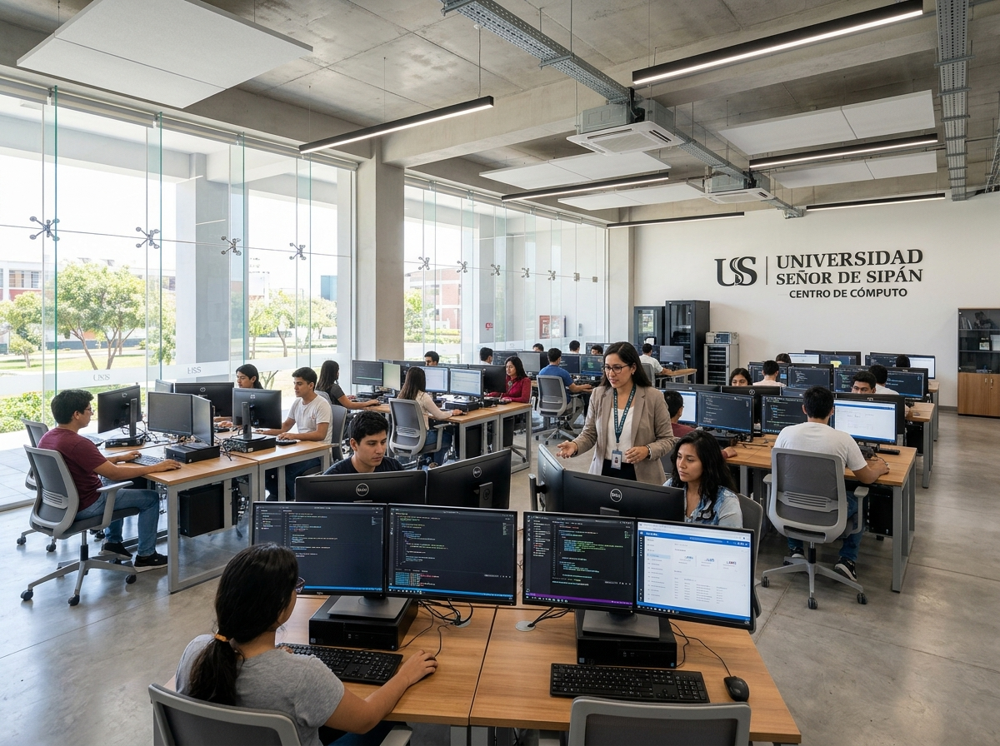

Ayuda al estudiante
Preguntas frecuentes
Respuestas directas a lo que más nos consultan sobre la acreditación en Computación, la matrícula, los pagos y la certificación internacional.
Preguntas y respuestas
Acreditación
¿Cómo acredito mi requisito de Computación para sacar mi bachiller?
Debes completar cuatro componentes de Computación, que se llevan en el 5.° y 6.° ciclo. Tienes dos maneras de hacerlo:
- Opción 1: tres cursos de la ruta de aprendizaje de tu carrera más un Taller de Certificación Internacional.
- Opción 2: cuatro Talleres de Certificación Internacional.
Cada curso se aprueba con nota mínima de 14. Cuando termines, pide que se valide tu check de Computación: envía un correo con tus apellidos, nombres, código y DNI a acredita.informatica@uss.edu.pe, con copia a acredita_computacion@uss.edu.pe. La confirmación llega en 24 horas de lunes a viernes y en 48 horas los fines de semana.
Sin ese requisito validado no se emite la Constancia de Egresado ni el expedito para el grado de Bachiller.
¿Cuál es la diferencia entre PROTECH XP y el Plan Tradicional?
PROTECH XP es el modelo por rutas de aprendizaje. Llevas los cursos de la agrupación de tu carrera (por ejemplo Word 365, Excel 365, Power BI o AutoCAD) y cierras con una certificación internacional Microsoft. Se dicta en la sede Chiclayo y en las filiales: cada curso cuesta S/ 420 en Chiclayo y S/ 240 en filiales.
El Plan Tradicional corresponde a los cursos de Computación II y Computación III. Se dicta solo en la sede Chiclayo y cada curso cuesta S/ 330.
El plan que te toca depende de tu plan de estudios. Si no estás seguro, consúltalo en el chatbot antes de matricularte.
¿Puedo llevar más de un curso a la vez?
Sí. Puedes llevar los cursos de tu ruta en paralelo. También puedes avanzar con las acreditaciones de inglés y emprendimiento al mismo tiempo, para cumplir todos los requisitos de egreso sin retrasos.
Experiencia y estudios previos
¿Cómo convalido cursos de computación cursados en institutos o universidades externas?
La convalidación reconoce un Título Profesional Técnico en Computación o carrera afín, emitido por una institución oficialmente reconocida. Es un trámite documental: no lleva examen. Necesitas:
- Solicitud formal, presentada hasta el 15 de diciembre.
- Copia legalizada o fedateada del título.
- Certificado de estudios y sílabos oficiales.
El Centro verifica los documentos y evalúa la equivalencia de contenidos. Luego se programa el pago del Derecho de trámite del Centro de Informática y del Derecho de Convalidación CIS, y el resultado se registra en el sistema académico. Se emite constancia, no certificado.
Si no tienes título técnico pero usas herramientas digitales en tu trabajo, existe la validación de competencias: un examen teórico-práctico en Microsoft Word o Microsoft Excel, sin cursar. Ambas vías están normadas para el Programa Gente con Experiencia y se solicitan en el Portal GEX. Si estudias en otra modalidad, consulta tu caso con el Centro antes de presentar documentos.
¿Qué requisitos tiene el Programa GEX para personas que trabajan?
GEX es la acreditación en Computación para estudiantes del Programa Gente con Experiencia. Se dicta únicamente en la sede Chiclayo y tiene tres etapas:
- Enero a marzo: clases virtuales, talleres y master class. S/ 100 al mes.
- Abril a julio: curso CISCO asincrónico. Gratis.
- Agosto: resolución de casos aplicados. S/ 250.
La inversión total es de S/ 550 y otorga certificado de 50 horas y constancia. Para participar, la Dirección del Programa de Experiencia Laboral envía la lista de estudiantes habilitados, Finanzas del Estudiante programa los pagos y el Centro de Informática te registra en tu grupo y horario.
Ten en cuenta que no hay cambios de fecha, reservas de matrícula ni traslados entre convocatorias. Si desapruebas o te inhabilitas, repites la acreditación en el siguiente verano y asumes sus costos.
Certificación internacional
¿Cómo rindo mi examen de certificación internacional MOS?
- Matricúlate en el Taller de Certificación Internacional desde tu Campus Virtual, eligiendo la modalidad PRESENCIAL.
- Paga el taller en una sola cuota: S/ 340 en la sede Chiclayo o S/ 280 en filiales.
- Asiste al taller. El Centro de Informática programa la fecha de tu examen y te la comunica por celular o correo.
- Rinde el examen en la plataforma oficial Certiport.
El examen dura 50 minutos, tiene 35 preguntas que se resuelven dentro del propio software de Office y se aprueba con 700 de 1000 puntos.
Matrícula y pagos
¿Dónde pago y cómo registro mi comprobante?
Puedes pagar en línea desde el módulo de tesorería de tu Campus Virtual o en los canales autorizados: BCP, BBVA, Banco de la Nación, Scotiabank y PagoEfectivo. En el BCP, busca «Universidad Señor de Sipán» en Pago de servicios.
No necesitas registrar el comprobante: el pago se acredita de forma automática en 24 a 48 horas. Guarda tu voucher. Si pasado ese plazo el pago no aparece, envíalo con tu código universitario y DNI por la Mesa de Tickets o a centro.informatica@uss.edu.pe.
Revisa el detalle de cada canal en Tarifas y pagos.
¿Cómo me matriculo en un curso o taller?
- Ingresa al Campus Virtual y revisa los horarios, debajo de tu foto.
- Ve a Procesos en línea y elige Matrícula en línea.
- Haz clic en el logo del Centro de Informática.
- Selecciona la modalidad (VIRTUAL para cursos, PRESENCIAL para talleres de certificación) y luego el curso y la sección.
El Campus Virtual no me deja matricularme. ¿Qué reviso?
- Que hayas elegido la modalidad correcta: VIRTUAL para cursos o PRESENCIAL para talleres de certificación.
- Que no tengas deudas ni documentos pendientes con la universidad.
- Que el pago al contado o la primera cuota ya esté registrado.
Si desaprobaste más de cuatro veces, el sistema bloquea tu acceso. En ese caso envía un correo a centro.informatica@uss.edu.pe con tu código, DNI y una captura del error para que se evalúe tu caso.
¿Puedo cambiarme de curso o de sección?
Sí. Antes de que empiecen las clases el cambio es gratuito. Una vez iniciadas cuesta S/ 20 y puedes pedirlo hasta el día 5 en ciclo Regular o hasta el día 3 en Súper Intensivo. Programa el Derecho de Trámite CIS en tu Campus Virtual y registra la solicitud en la Mesa de Tickets.
Documentos
¿Cómo solicito mi constancia, certificado o diploma?
- En tu Campus Virtual entra a Procesos en línea, Trámites y Programación de servicios.
- Elige el documento y su modalidad, digital o impresa.
- Realiza el pago y conserva tu voucher.
Constancia CIS: S/ 25 digital o S/ 30 impresa. Certificado CIS: S/ 35 o S/ 40. Diploma CIS: S/ 60 o S/ 80. Para el documento digital envía tu voucher a centros.empresariales@uss.edu.pe y lo recibes en 24 horas hábiles. El documento impreso se recoge en Calle Elías Aguirre 933, Chiclayo.
Revisa qué cursos corresponden a tu carrera
El catálogo muestra las siete agrupaciones de escuelas y los cursos de cada ruta.